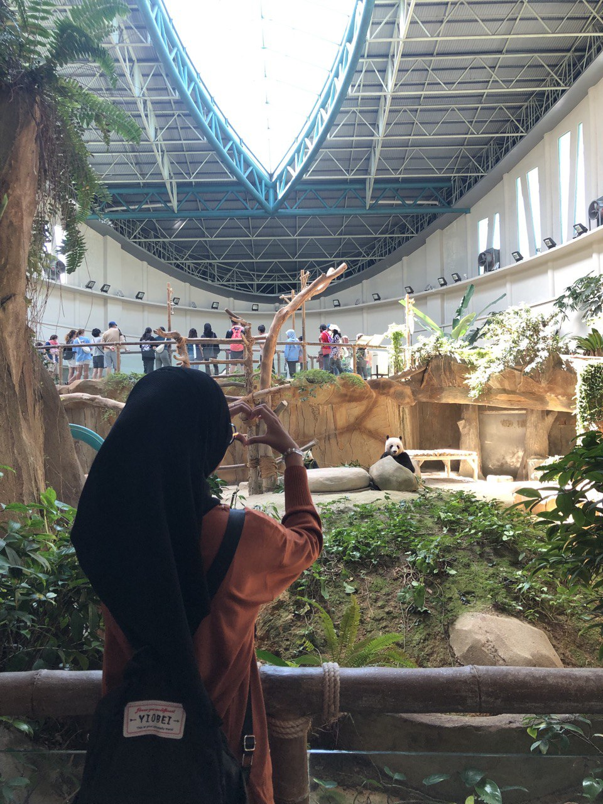
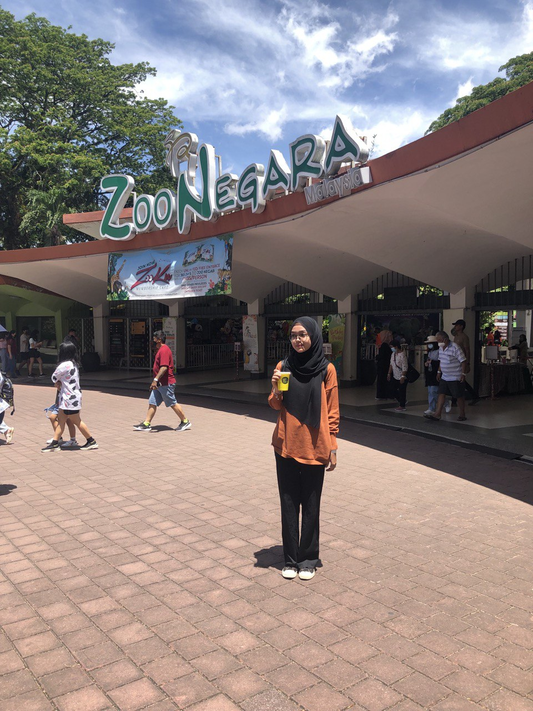
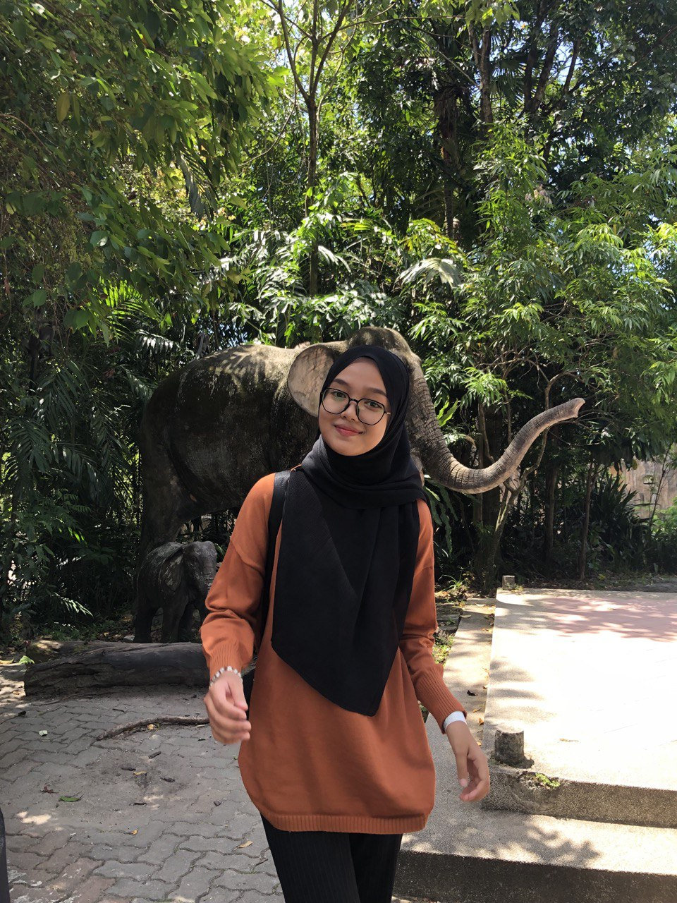
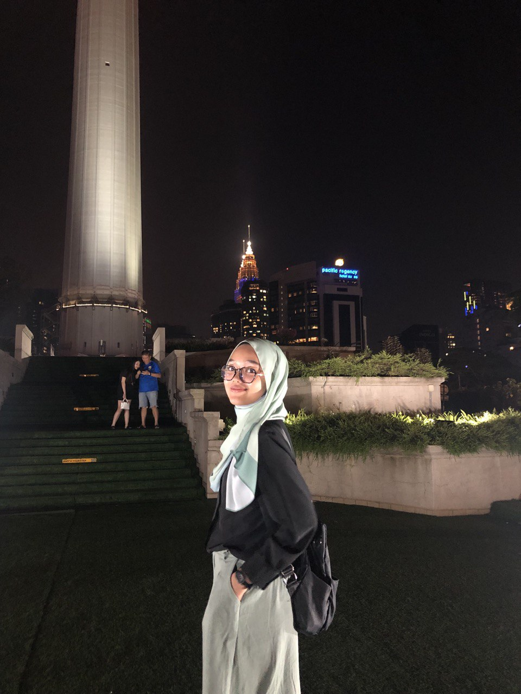
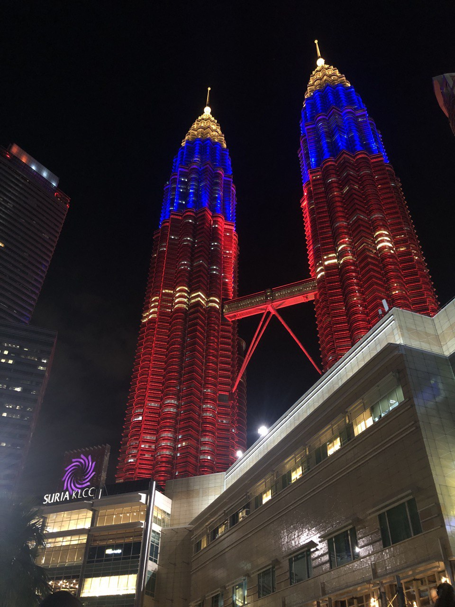
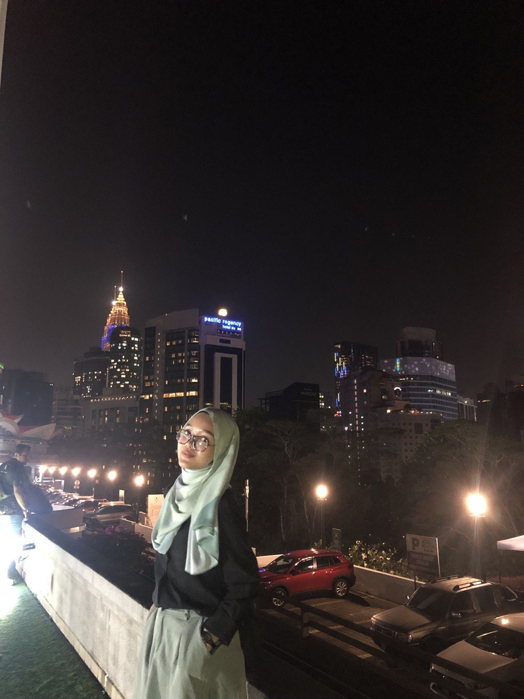

KUALA LUMPUR
ENJOY EVERY SINGLE PART IN KL
1.Zoo Negara Malaysia: A Sanctuary of Wildlife Conservation and Education
Zoo Negara Malaysia is a shining example of animal conservation, environmental education, and care, hidden away within the verdant surroundings of Hulu Kelang, close to Kuala Lumpur. This renowned zoological park, covering acres of natural environment, raises awareness of the difficulties facing wildlife conservation today while providing visitors with an engrossing voyage into the fascinating world of animals.Malaysia's dedication to environmental sustainability, education, and wildlife protection is exemplified by Zoo Negara Malaysia. It is an invaluable resource for educators, tourists, and conservationists due to its varied wildlife collection, conservation efforts, and educational activities. People are encouraged to appreciate the beauty of nature and take proactive measures to preserve the planet's biodiversity for future generations as Zoo Negara Malaysia expands its efforts to protect endangered species and raise awareness of conservation issues.



2.Kuala Lumpur Tower: Icon of Modernity and Panoramic Views
The Kuala Lumpur Tower, often known as the KL Tower, is a symbol of the city's modernism, architectural ingenuity, and panoramic beauty, rising magnificently above the busy streets. Offering visitors an unmatched view of Malaysia's dynamic capital, this landmark telecoms tower showcases the country's technological superiority, cultural diversity, and spectacular views.In the center of Kuala Lumpur, the Kuala Lumpur Tower is more than just a communication tower it is a symbol of technical innovation, modernity, and cultural diversity. Travelers looking to see Malaysia's vibrant capital from new heights must visit this place because of its breathtaking architecture, expansive views, and rich cultural offerings. The Kuala Lumpur Tower welcomes tourists to be awestruck by its beauty, delve into its cultural attractions, and embrace the innovative spirit that characterizes Kuala Lumpur's skyline as it continues to change as a representation of Malaysia's advancement and worldwide connectedness.


